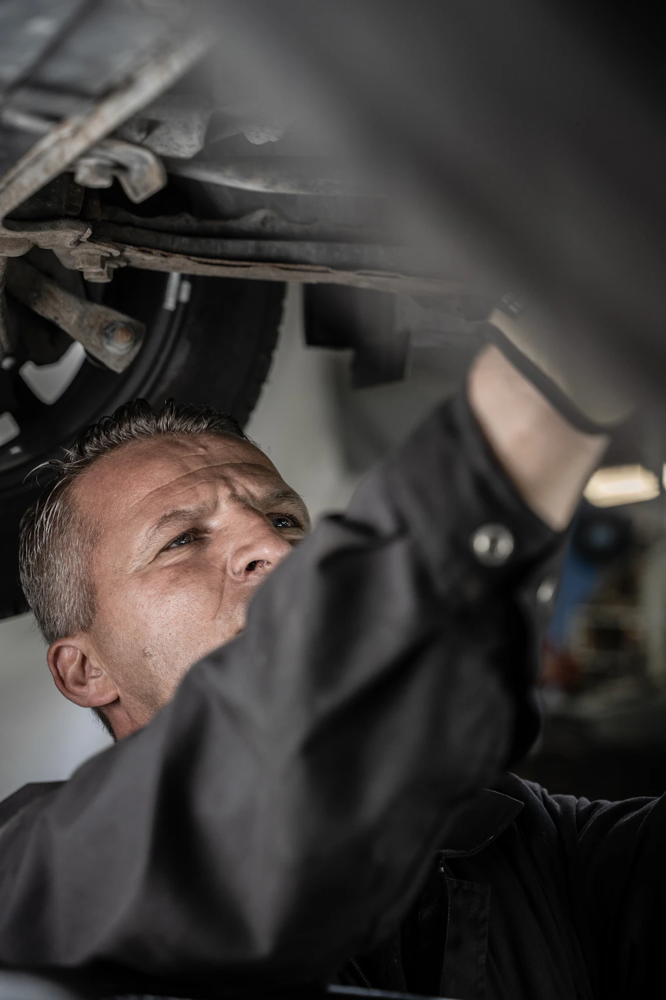
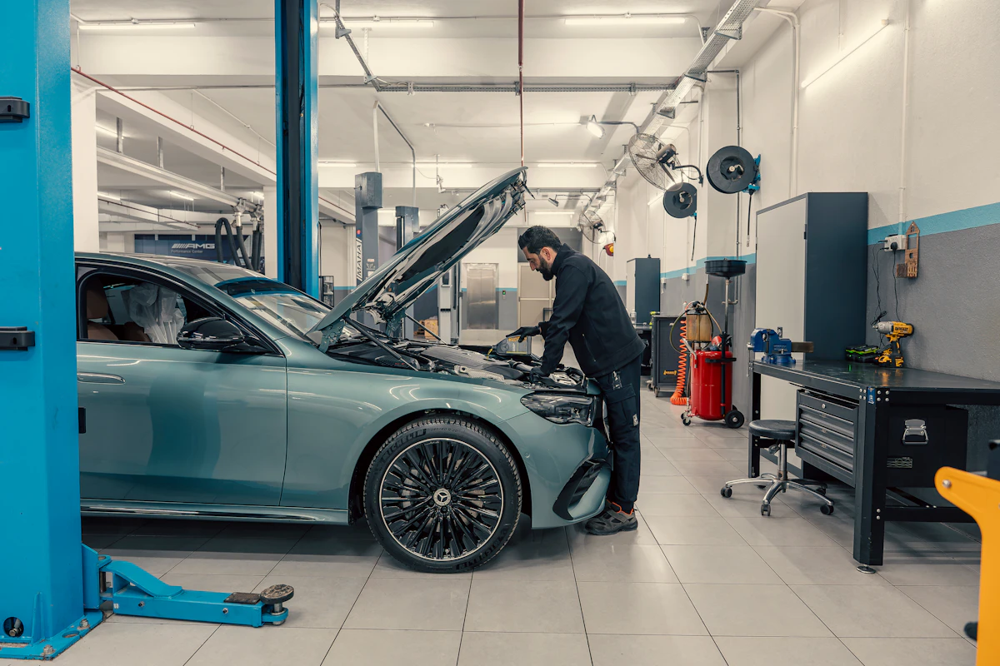
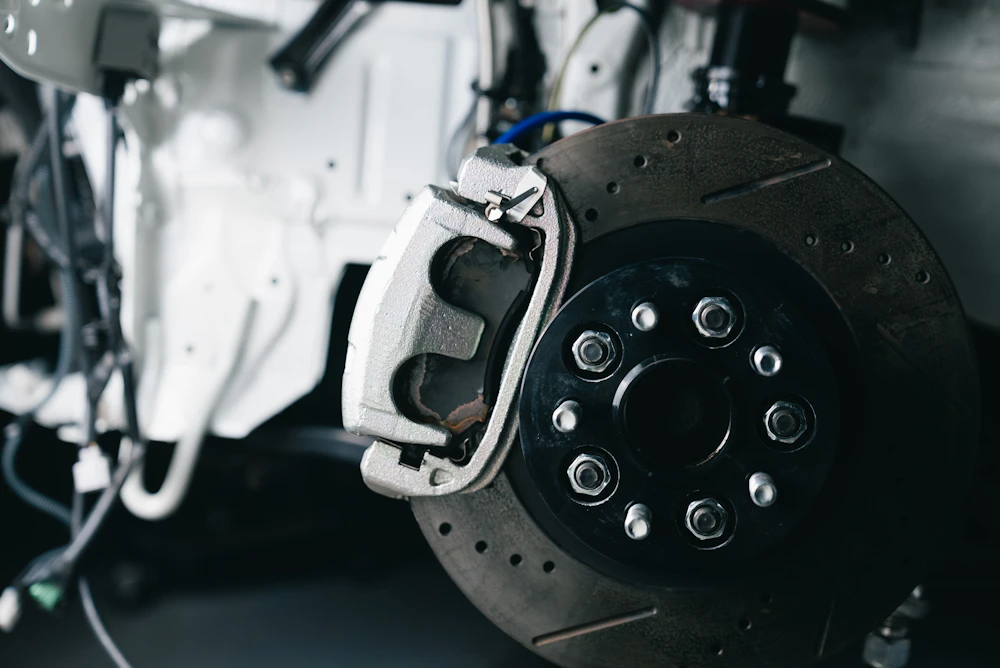
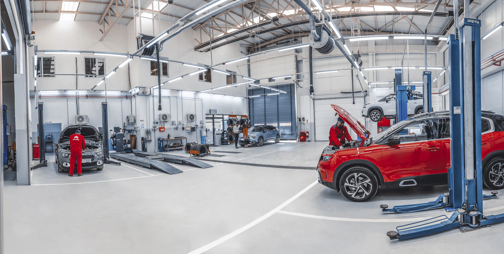

01ТО
Замена масла
Моторное масло и фильтр, проверка уровня после работ.
от 800 сом
Техобслуживание, диагностика и ремонт легковых автомобилей. Объясняем, что нужно сделать, и показываем состав работ до начала ремонта.
Выберите направление, чтобы увидеть нужные работы. Все суммы — примерные учебные цены, не публичная оферта.
Моторное масло и фильтр, проверка уровня после работ.
Считывание ошибок, разбор кодов и рекомендации по дальнейшей проверке.
Осмотр амортизаторов, рычагов, втулок и шаровых опор.
Осмотр дисков и колодок, оценка износа и замена по согласованию.
Снятие, монтаж и балансировка колёс легкового автомобиля.
Осмотр жидкостей, световых приборов, ремней и видимых утечек.
* Точная стоимость зависит от марки машины, состояния узлов, объёма работ и стоимости запчастей. Эти цифры придуманы для лабораторной работы.

РАБОЧИЙ ПРОЦЕСС / 02«Гараж №12» — учебный образ небольшого городского автосервиса, куда приезжают решить конкретную проблему с автомобилем. Здесь важнее разобраться в неисправности, чем придумать красивое название ремонту.
На сайте можно посмотреть основные направления работ и примерные цены. Перед ремонтом клиенту следует уточнить диагностику, состав работ, запчасти и итоговую стоимость.
Четыре понятных шага без сложных терминов.
Опишите марку, модель и неисправность автомобиля.
Мастер проверяет автомобиль и уточняет причину проблемы.
Обсуждаются необходимые работы, запчасти и цена.
После работ проверяется результат и выдаются рекомендации.
Фотографии иллюстрируют типичные сервисные операции и не изображают реальную мастерскую Нурдолота.



Заполните несколько полей — сайт подготовит текст для копирования. Это демонстрация формы: данные никуда автоматически не отправляются.
Город: Бишкек, Кыргызстан
Адрес, телефон и часы работы будут указаны после создания настоящего автосервиса.
Демонстрационные контактные данные намеренно не выдуманы.